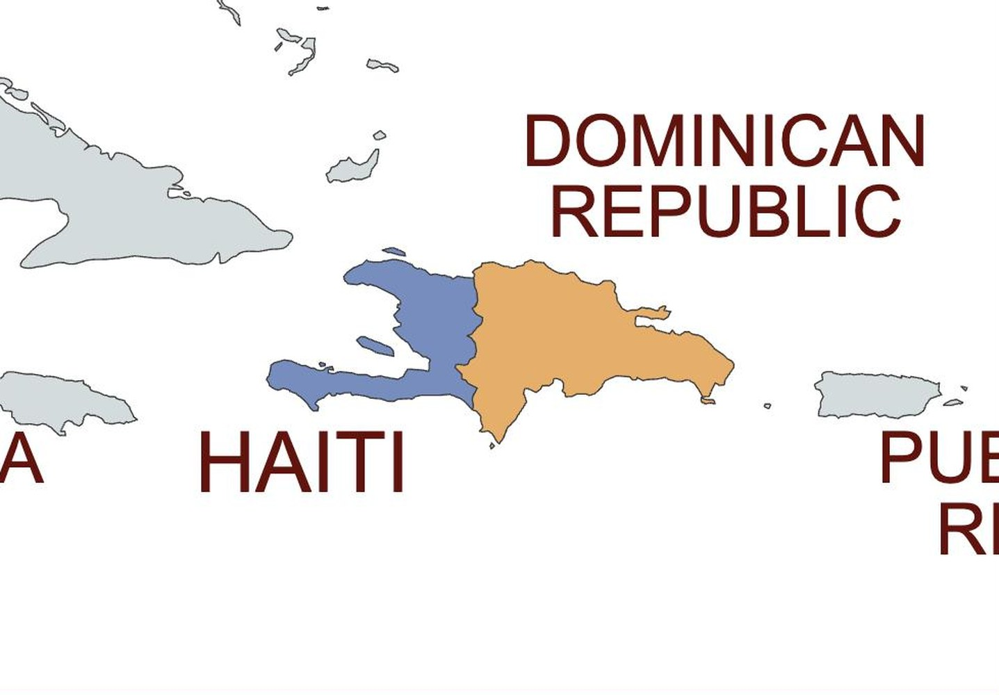
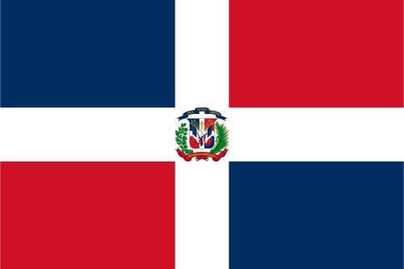
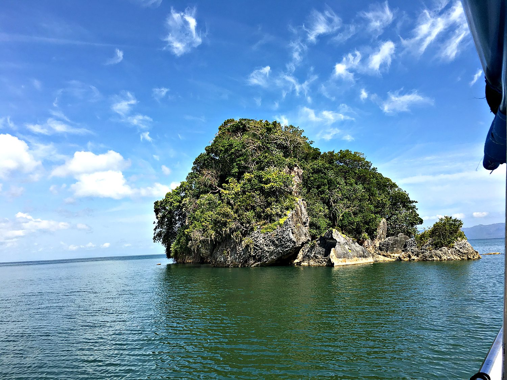
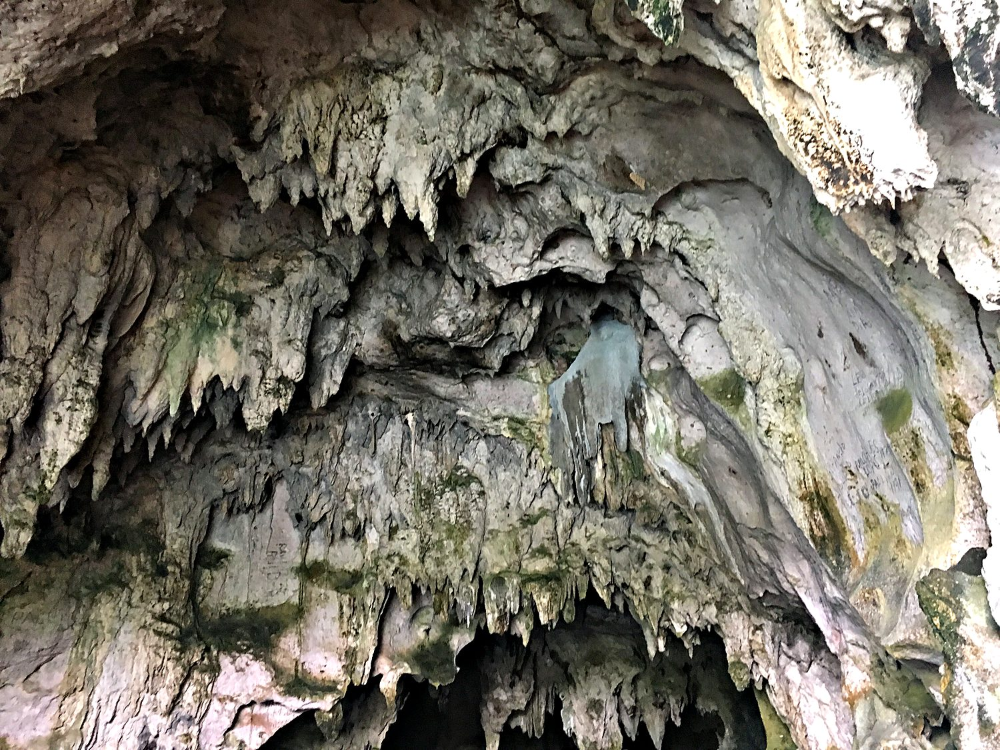
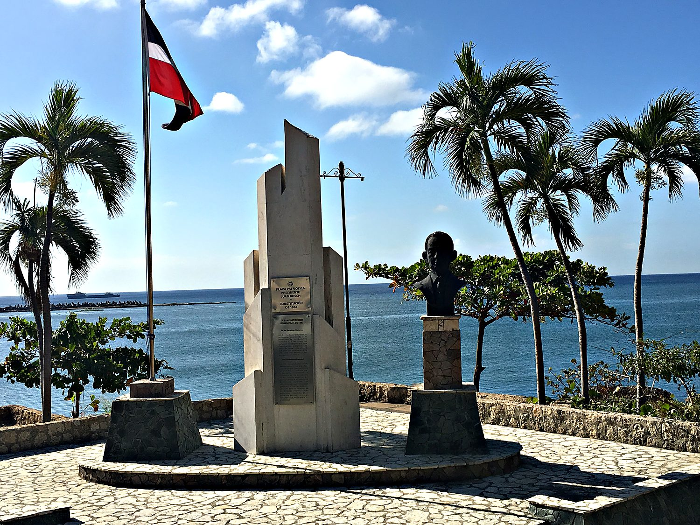

I travelled to the Dominican Republic in March 2018 on a student-budget adventure. I met my friend Jisu at the Santo Domingo airport after a sleepless overnight journey during which I very nearly blacked out. We made our way east by the full local transport spectrum: the cheap shared vans called guaguas, long-distance Caribe Tours buses, and the ubiquitous motoconcho scooter-taxis. Our destination was the sleepy village of Las Galeras on the Samaná Peninsula. Three key memories stand out. The beaches were sublime, the card game Palace was one at which Jisu cheated with breathtaking shamelessness, and the empanadas were consumed in a quantity that future historians may wish to redact.
The Dominican Republic’s capital is Santo Domingo. It was founded by the Spanish in the 1490s, making it the oldest continuously inhabited European-established city in the Americas. Its Colonial Zone, now a UNESCO World Heritage Site, holds the hemisphere's first cathedral, first university, and first hospital. This is where the European colonization of the Americas began, on the island of Hispaniola, which the Dominican Republic shares with Haiti to its west. Before any of that, the island belonged to the Taíno, whose language quietly conquered the conquerors. Hurricane, canoe, hammock, and barbecue are all Taíno words. I found the mixture of historic buildings and stunning sea views to be particularly pleasant.

The Taíno themselves fared catastrophically. Within a few generations of Columbus's arrival in 1492, the Indigenous population of Hispaniola was all but annihilated by forced labour and Old World disease. The Spanish then turned to importing enslaved Africans to work the land, a template that would soon, tragically, be stamped across the entire hemisphere. Santo Domingo flourished as Spain's first colonial capital before the empire's attention drifted to the gold and silver of the mainland. That left Hispaniola a contested backwater, fought over by Spain, France, and eventually the two nations that would emerge on the island itself.

Here the Dominican Republic's history takes a genuinely unusual turn. The country won its independence not from a European empire but from its neighbour. Haiti, having thrown off France, occupied the entire island from 1822 until 1844. On 27 February 1844, Juan Pablo Duarte and his secret society La Trinitaria declared Dominican independence. The centuries since have not lacked drama, including the long and murderous rule of the tyrannical dictator Rafael Trujillo. The national flag reflects the country's devout self-image, with a white cross dividing fields of blue and red. Uniquely among the world's flags, it carries a small open Bible at its center. Today, the Dominican Republic is far more developed and stable than its neighbor to the West. Many Dominicans genuinely believe that Haitians are witches or sorcerers, underscoring the tensions between the two countries.
One of the trip's highlights was a boat tour through Los Haitises National Park, at the inner corner of Samaná Bay, led by an endearingly eccentric guide named Pedro. The park is a drowned karst landscape. Hundreds of rounded limestone hummocks called mogotes rise straight out of the water, furred with green and threaded by dense mangrove channels alive with birds. We wove among those emerald islands in a small boat, with roots arching overhead and the occasional monkey and frog putting in an appearance. It felt like paddling through the set of a prehistoric film.

The limestone that forms those islands is riddled with caves, and the best of them are galleries of Taíno and pre-Taíno history. On some walls, pre-Columbian pictographs and petroglyphs survive. These are charcoal and ochre figures left by the island's first people, who used the cool, echoing chambers for shelter and ritual. Inside, dark underground pools mirror the stalactites overhead. I can personally confirm the pools are real, having slipped directly into one. The rest of the boat found this unplanned act of aquatic immersion considerably funnier than I did. I found it amazing that such small islands could have developed cave systems, making for a very adventurous excursion.

In my wanderings around the Santo Domingo Old Town, I discovered this memorial to Juan Bosch, the Dominican Republic’s first democratically elected president. Bosch took an active stance against dictator Rafael Trujillo, resulting in his exile. After Trujillo’s assassination in 1961, Bosch was elected president and sought to reform the country. These irked the church, businesses, and the military, and Bosch was deposed in a coup d’etat a mere seven months after his election. Following this, the ex-president remained politically relevant through essays and his writing. I found this monument to be a good reminder that democracy is not easy. Having good intentions is not enough to make meaningful change; you also need effective governance and good political instincts to handle the competing wishes of different interest groups.
